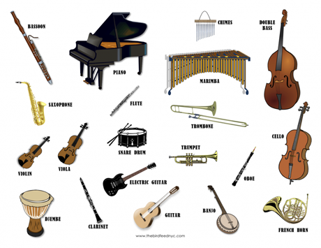

Виды музыкальных инструментов
Виды музыкальных инструментов

Духовые — музыкальные инструменты, источником звука в которых является колеблющийся столб воздуха, находящийся в трубке инструмента.
Клавишные — инструменты, управление звукоизвлечением в которых осуществляется при помощи клавиатуры.
Ударные — большая, пёстрая и разнохарактерная группа, важная составляющая любого оркестра, которую объединяет общий способ извлечения звука – удар.
Струнные — музыкальный инструмент, в котором источником звука (вибратором) являются колебания струн.
Далее можно ознакомиться с разновидностями музыкальных инструментов по каждой группе:
Ударные и струнные инструменты
Духовые и клавишные инструменты
Музыкальные инструменты. Определения